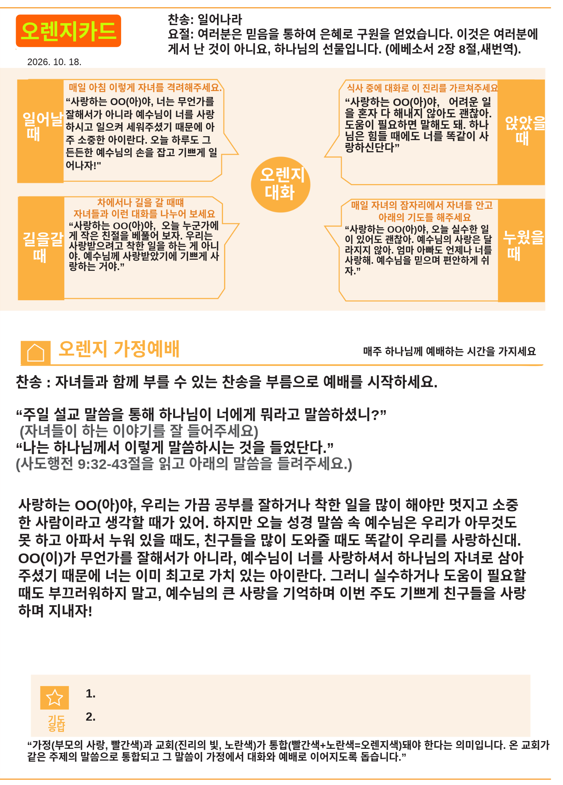

오렌지 가정예배 · 일어나라
2026년 10월 18일 주간 · 사도행전 9:32–43
이번 주 말씀
여러분은 믿음을 통하여 은혜로 구원을 얻었습니다. 이것은 여러분에게서 난 것이 아니요, 하나님의 선물입니다. (에베소서 2장 8절, 새번역)
사도행전 9장 32–43절을 읽고, 우리를 먼저 사랑하고 일으키시는 예수님을 가족과 함께 나누어 보세요.

2026년 10월 18일 주간 · 사도행전 9:32–43
여러분은 믿음을 통하여 은혜로 구원을 얻었습니다. 이것은 여러분에게서 난 것이 아니요, 하나님의 선물입니다. (에베소서 2장 8절, 새번역)
사도행전 9장 32–43절을 읽고, 우리를 먼저 사랑하고 일으키시는 예수님을 가족과 함께 나누어 보세요.
